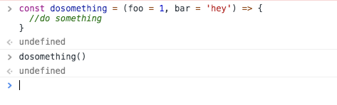
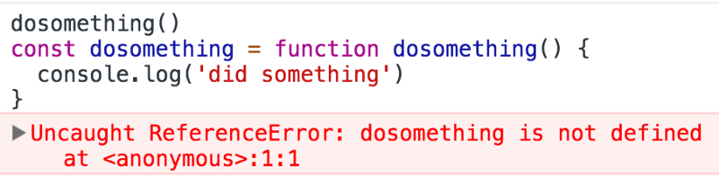
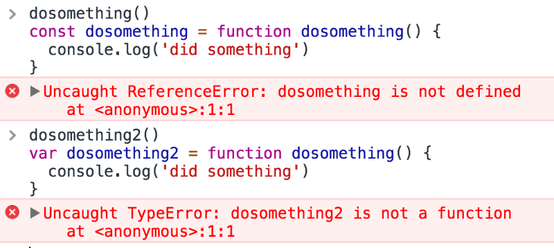

javascript-function 函数
现在我们将学习 JavaScript 中所有关于函数的知识，从概述到小细节帮助你更好的使用 JavaScript 函数。注：本文没有一句废话，对于新手，可以作为该知识点的入门指南，对于有经验的开发人员可以作为一次很好的回顾。
JavaScript 中的所有内容都在函数中执行。
函数是一个自包含的代码块，可以定义一次，并运行任意次数。
函数可以选择接受参数，并返回一个值。
JavaScript 中的函数是 对象，一种特殊的对象：function objects(函数对象)。
另外，函数在 JavaScript 中是一等公民，因为它们可以被赋值给一个值，它们可以作为参数传递并用作返回值。
高阶函数, 能当参数又能作为返回值返回
让我们从“旧的”，ES6 / ES2015 之前的语法开始。 这是一个函数声明：
JavaScript 代码:
1 | function dosomething(foo) { |
在 ES6 / ES2015 流行的当下，简称为常规函数。
可以将函数分配给变量（这称为函数表达式）：
JavaScript 代码:
1 | const dosomething = function(foo) { |
命名函数表达式类似，但在堆栈调用跟踪中更好用，这在发生错误时很有用 – 它保存函数的名称：
JavaScript 代码:
1 | const dosomething = function dosomething(foo) { |
ES6 / ES2015 引入了箭头函数，在使用内联函数时，它们特别适合用作参数或回调函数：
JavaScript 代码:
1 | const dosomething = (foo) => { |
箭头函数与上面的其他函数定义有很大的不同，我们会在后面的章节中详细介绍。
参数
一个函数可以有一个或多个参数。
JavaScript 代码:
1 | const dosomething = () => { |
从 ES6 / ES2015 开始，函数可以具有参数的默认值：
JavaScript 代码:
1 | const dosomething = (foo = 1, bar = 'hey') => { |
这允许您在不填充所有参数的情况下调用函数：
JavaScript 代码:
1 | dosomething(3); |
ES2017 引入了参数的尾随逗号，这个功能有助于减少因移动参数时丢失逗号而导致的错误（例如，移动中间的最后一个）：
JavaScript 代码:
1 | const dosomething = (foo = 1, bar = 'hey',) => { |
您可以将所有参数包装在一个数组中，并在调用函数时使用展开运算符：
JavaScript 代码:
1 | const dosomething = (foo = 1, bar = 'hey') => { |
使用许多参数，记住顺序可能很困难。这时使用对象解构这个对象允许保留参数名称：
与解构赋值默认值结合使用, 即设置函数参数默认值和解构赋值一起用
JavaScript 代码:
1 | const dosomething = ({ foo = 1, bar = 'hey' }) => { |
注意这里 函数参数是个对象 用的是 { foo = 1, bar = 'hey' }，用的是等号 ,不是 { foo : 1, bar : 'hey' }。
这里 上面代码只使用了对象的解构赋值默认值，没有使用函数参数的默认值。
对象解构
参数默认值可以与解构赋值的默认值，结合起来使用。
1 | function foo({ x, y = 5 }) { |
上面代码只使用了对象的解构赋值默认值，没有使用函数参数的默认值。只有当函数 foo 的参数是一个对象时，变量 x 和 y 才会通过解构赋值生成。如果函数 foo 调用时没提供参数，变量 x 和 y 就不会生成，从而报错。通过提供函数参数的默认值，就可以避免这种情况。
函数参数如果定义时为对象, 就会使用对象的解构赋值默认值，, 函数的参数的默认值用看下面
其实也一样理解, 如果传入的参数用了=号就是设置参数默认值, 如果传入的是{}对象, 那么先是解构赋值
1 | function foo({ x, y = 5 } = {}) { |
上面代码指定，如果没有提供参数，函数 foo 的参数默认为一个空对象。
作为练习，请问下面两种写法有什么差别？
1 | // 写法一 |
上面两种写法都对函数的参数设定了默认值，
区别是写法一函数参数的默认值是空对象，但是设置了对象解构赋值的默认值；
写法二函数参数的默认值是一个有具体属性的对象，但是没有设置对象解构赋值的默认值。
1 | // 函数没有参数的情况 |
返回值
每个函数都返回一个值，默认情况下是 undefined 。

任何函数在其代码行结束时或执行流找到 return 关键字时终止执行。
当 JavaScript 遇到 return 关键字时，它退出函数执行并将控制权交还给其调用者。
如果 return 后面跟一个值，则该值将作为函数的结果返回：
JavaScript 代码:
1 | const dosomething = () => { |
您只能返回一个值。
要模拟返回多个值，可以返回对象字面量或数组，并在调用函数时使用解构赋值。
使用数组：
1 | const dosomething = () => { |
使用对象：
1 | const dosomething = () => { |
嵌套函数
可以在函数中定义其他函数：
JavaScript 代码:
1 | const dosomething = () => { |
被嵌套函数的作用域是嵌套它的函数，不能从外部调用。
对象方法
当用作对象属性时，函数称为方法：
JavaScript 代码:
1 | const car = { |
箭头函数中的“this”
当箭头函数与常规函数用作对象方法时，有一个重要的行为区别。考虑这个例子：
JavaScript 代码:
1 | const car = { |
stop() 方法无法正常工作。
没有
this也没有prototype, 但都有constructor是Function()
这是因为在两个函数声明风格中处理 this 的方式是不同的。this 在箭头函数中指的是封闭的函数上下文，在这种例子中是 window 对象：
1 | const car = { |
this，是指使用 function() 的宿主对象
这意味着箭头函数不适合用于对象方法和构造函数（箭头函数构造函数实际上会在调用时引发 TypeError ）。
IIFE，立即调用函数表达式
IIFE 是一个在声明后立即执行的函数：
JavaScript 代码:
1 | (function dosomething() { |
您可以将结果分配给变量：
JavaScript 代码:
1 | const something = (function dosomething() { |
它们非常方便，因为您无需在定义后单独调用该函数。
函数提升（Hoisting）
执行代码之前的 JavaScript 会根据某些规则对其进行重新排序。
特别需要记住的一点是函数会被移动到其作用域的顶部。所以下面的写法是合法的：
JavaScript 代码:
1 | dosomething(); |
JavaScript 中的 Hoisting (变量提升和函数声明提升) 666
在内部，JavaScript 在调用之前移动函数，以及在同一作用域内找到的所有其他函数：
JavaScript 代码:
1 | function dosomething() { |
看下面的代码，如果您使用命名函数表达式，因为您正在使用 javascript-变量 ，所以会发生不同的事情。我们说的变量提升，其实是变量声明被提升，但不是值被提升，因此下面的代码中不是那个函数被提升。
JavaScript 代码:
1 | dosomething(); |
上面代码不会工作

上面代码内部发生的事情是这样的.
JavaScript 代码:
1 | const dosomething |
let 声明也是如此。 var 声明也不起作用，但有不同的错误：

这是因为 var 声明被提升并初始化为 undefined 作为值，而 const 和 let 被提升但未初始化。
const和let要先声明后使用的
1 | ss |
注：
关于 const 和 let 是否被 hoisting（提升）的问题争论了好几年了至今没有定论，主要原因是 hoisting（提升）和 TDZ (temporal dead zone，暂时性死区)都是非官方的解释，只是帮助大家理解 JavaScript 机制的说法。
本文最后说到的示例有两种解释：
第一种解释： const 和 let 声明的变量是不会提升，因为没有提升，所以报 not defined 错误，var 提升了，初始值为 undefined ，但是被当做了函数运算，undefined 不是函数，所以说变量不是函数。
第二种解释：JavaScript 中所有的声明 (var, let, const, function, function*, class) 都会被 hoisting（提升）。var / function / function*声明和 let / const / class 声明之间的区别是初始化。const 和 let 有一个TDZ，初始化被推迟，也就是变量保持未初始化。 所以访问它时会引发 ReferenceError 异常。 只有在碰到 let / const / class语句时，才会初始化变量，这叫临时死区。和变量提升是两码事
暂时性死区就是要你先声明后使用
ES6 中 let 暂时性死区详解
let MDN
暂时性死区(TDZ)并不神秘
1 | console.log(x); // throws a ReferenceError |
老的 var 和新的 let/const 声明（除了他们的作用域外）最大的主要不同点之一就是后者被暂时性死区所约束，也就是当他们在初始化之前被访问(读/写)的时候将抛出 ReferenceError , 而不是跟 var 声明变量一样返回 undefined 。
反正就是很乱！写文档的说文档不正确，MDN的文档也是一会这个解释，一会那个解释。大家觉得哪个解释适合自己理解，就用哪个解释吧！